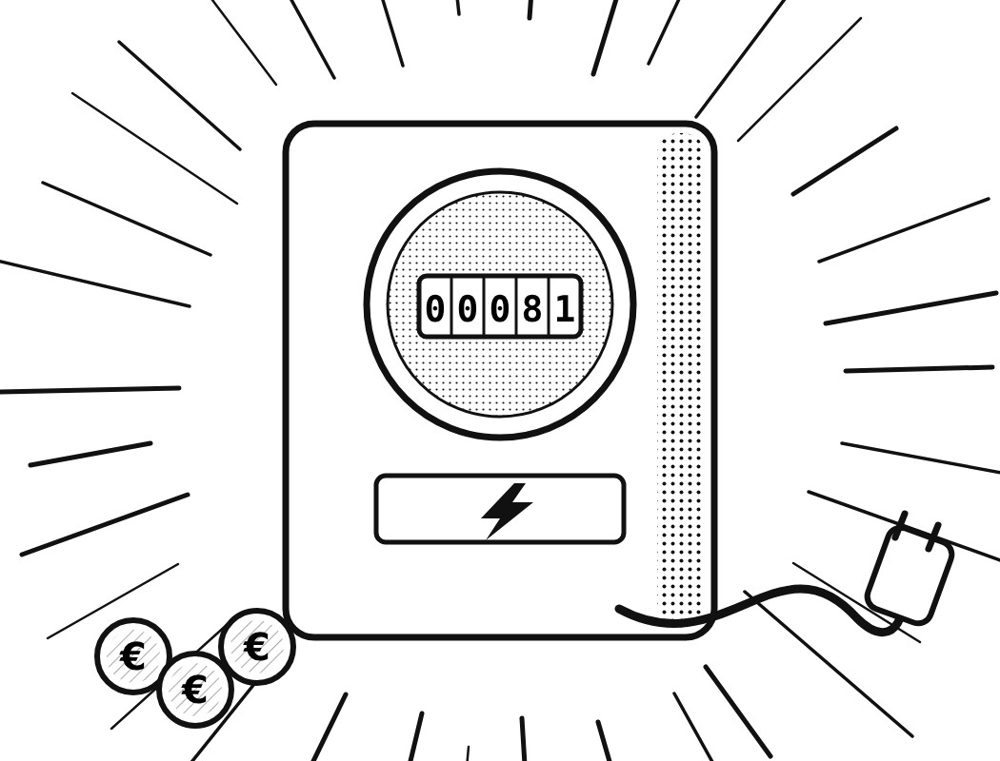

Aktuell
Morning Briefing, Dienstag, 27. Oktober 2026Der europäische Gaspreis (TTF) steigt laut Bericht auf bis zu 97,64 Euro je Megawattstunde, den höchsten Stand seit Ende 2022 finanzen.at (dpa-AFX)Morning Briefing, Montag, 26. Oktober 2026Das ifo-Geschäftsklima steigt im Oktober um 0,3 Punkte auf 90,2, den höchsten Stand seit dem Frühjahr 2023 dpa-AFX, arivaMorning Briefing, Sonntag, 25. Oktober 2026Frankreichs Regierung bietet nach den Schülerprotesten laut ZDFheute vier Milliarden Euro Kredite für Gymnasien und den Ersatz von Parcoursup bis Herbst 2028 an ZDFheuteStromsteuer runter: Was bringt dir das?In Oleschky gilt seit 3 Uhr eine lokale Feuerpause für Hilfslieferungen, die Russland und der ukrainische Generalstab laut ZDFheute bestätigten ZDFheuteIsrael wählt am Dienstag: So läuft die WahlIn Israel hat die Parlamentswahl begonnen, 7,3 Millionen Menschen sind laut 20 Minuten aufgerufen, die 120 Sitze der Knesset zu vergeben 20 MinutenGaspreis: Höchster Stand seit Ende 2022 und 3 weitere ThemenSelbstauskunft ist keine Kontrolle: Was der Fall Christ über Beratergremien zeigtSchuldenbremse und Sondervermögen
Ab heute online
Deutschland. Auf den Punkt.
Willkommen bei DoytschlandTv. Nachrichten, klar eingeordnet. Fakt und Meinung sind getrennt, die Quellen stehen dabei.
DoytschlandTv in 25 Sekunden
Alle Formate. Ein Ziel.
Briefing, Nachrichten, Dossiers, Erklärt und Meinungen. Wissen, worum es geht.
Zuletzt im Blick
27. Oktober 2026
Nachrichten · Di., 27.10.Morning Briefing, Dienstag, 27. Oktober 2026Grafik, DoytschlandTvNachrichten · Mo., 26.10.Morning Briefing, Montag, 26. Oktober 2026Grafik, DoytschlandTvNachrichten · So., 25.10.Morning Briefing, Sonntag, 25. Oktober 2026Grafik, DoytschlandTv Morning BriefingGaspreis: Höchster Stand seit Ende 2022 und 3 weitere ThemenIllustration, KI-generiert, kein Foto
Morning BriefingGaspreis: Höchster Stand seit Ende 2022 und 3 weitere ThemenIllustration, KI-generiert, kein Foto Kolumne · DemokratieSelbstauskunft ist keine Kontrolle: Was der Fall Christ über Beratergremien zeigtIllustration, KI-generiert, kein Foto.ErklärtSchuldenbremse und Sondervermögen
Kolumne · DemokratieSelbstauskunft ist keine Kontrolle: Was der Fall Christ über Beratergremien zeigtIllustration, KI-generiert, kein Foto.ErklärtSchuldenbremse und Sondervermögen

Nachrichten · So., 25.10.Stromsteuer runter: Was bringt dir das?Illustration, KI-generiert, kein FotoNachrichten · So., 25.10.Israel wählt am Dienstag: So läuft die WahlHebron, 23.10. Foto: Mamoun Wazwaz / APAimages / IMAGOMorning BriefingGaspreis: Höchster Stand seit Ende 2022 und 3 weitere ThemenIllustration, KI-generiert, kein FotoKolumne · DemokratieSelbstauskunft ist keine Kontrolle: Was der Fall Christ über Beratergremien zeigtIllustration, KI-generiert, kein Foto.ErklärtSchuldenbremse und Sondervermögen
MeinungenKolumnenHier sagen wir, was wir denken. Klar als Meinung gekennzeichnet, mit Begründung und Quellen.
DossiersThemenreihen mit TiefgangRecherchiert aus öffentlichen Quellen. Jede Aussage belegt, Unsicherheit benannt.
ErklärtEinfach erklärtHintergründe in zwei Minuten: Lobbyregister, Schuldenbremse, Rente und mehr.
Fakt
Was passiert ist, mit Quellen.
Einordnung
Warum es wichtig ist.
Haltung
Unsere Meinung, immer gekennzeichnet.
Jeden Tag ein Thema.
Täglich ein Morning Briefing, dazu Karussells auf Instagram und TikTok.